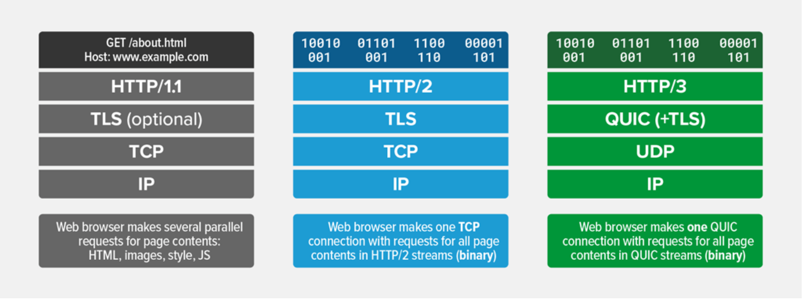

HTTP/3
使用HTTP/2 再结合TLS 1.3的优化，可以使再次握手实现0-RTT的目标，为什么还要继续研究HTTP/3呢？
- HTTP + TLS 的首次握手还是需要花费多次 RTT，仍有优化空间
- 有序字节流引出的 队头阻塞（Head-of-line blocking），使得HTTP2的多路复用能力大打折扣
- 基于TCP四元组确定一个连接，这种诞生于有线网络的设计，并不适合移动状态下的无线网络，这意味着IP地址的频繁变动会导致TCP连接、TLS会话反复握手
HTTP/3协议解决了这些问题：
- HTTP3基于UDP协议重新定义了连接，在QUIC层实现了无序、并发字节流的传输，解决了队头阻塞问题（包括基于QPACK解决了动态表的队头阻塞）
- HTTP3重新定义了TLS协议加密QUIC头部的方式，既提高了网络攻击成本，又降低了建立连接的速度（仅需1个RTT就可以同时完成建链与密钥协商）
- HTTP3 将Packet、QUIC Frame、HTTP3 Frame分离，实现了连接迁移功能，降低了5G环境下高速移动设备的连接维护成本
HTTP协议机制的对比
HTTP/3 业界进展
在 2022年6月6日,IETF正式标准化 HTTP/3为 RFC9114。
客户端方面的支持
- 2019年9月,Cloudflare和Google Chrome(Canary build)添加支持HTTP/3,同年秋季后,Firefox Nightly也添加支持。
- 2020年,Chrome、Firefox、Safari浏览器相继开始支持HTTP/3
- 2021年9月,iOS系统网络库有条件地支持HTTP/3,Android等暂不支持。
服务端方面的支持
- 2021年Q4,F5和Microsoft发布支持HTTP/3
- 2021年11月,HAProxy 2.5开始支持HTTP/3,但是处于预实验阶段,仅用于开发
- 2021年底,腾讯云CLB、CDN开放云客户使用TQUIC(基于Google cronet开发)
- 2022年2月,阿里开源XQUIC,比计划延期了一年多,据说上生产环境了
- Nginx:分支nginx-quic开发中,2021年底合入主分支的roadmap已延期,暂无新消息,乐观估计也要到2023年的nginx-1.24.0版本
- Apache httpd:暂无相关消息
- Tomcat:暂无相关消息